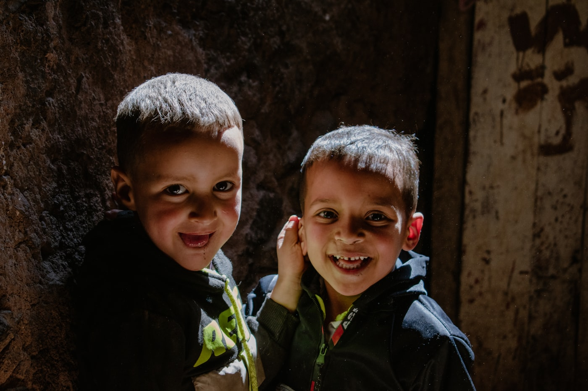
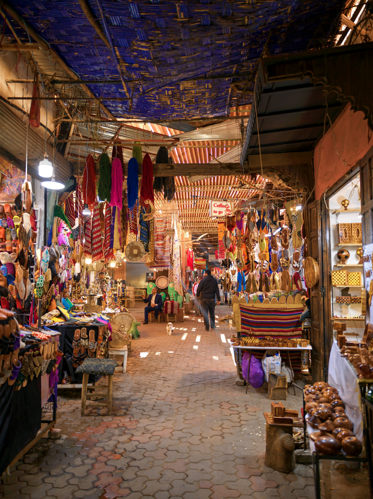

Impact Operating System
Rendre chaque nuitée solidaire, traçable et mesurable.
Une interface premium pour activer les partenaires, suivre les fonds et publier la preuve : collecte, allocation, projets, commerce solidaire et gouvernance.
Live pilot
WTUCE · Morocco
Réservation
Collecte
Fonds
Projet
Preuve
Studio d’activation
Un discours clair pour chaque partenaire.
Le même mécanisme doit se présenter différemment à un hôtel, une OTA, une institution ou une marketplace. Ici, le parcours devient clair, actionnable et mesurable.
Transformer chaque nuitée en preuve d’engagement.
Activez la contribution à la réservation, affichez un badge d’impact, puis recevez un reporting mensuel prêt pour vos clients, équipes et partenaires.
+50 000 €
contribution mensuelle sur un pilote de 62 500 nuitées
Fonds d’impact
Une allocation lisible dès le départ.
Les partenaires voient immédiatement comment leur contribution est répartie. Ce n’est pas un don flou : c’est une architecture de financement lisible.
Carte d’impact
Piloter l’impact par territoire.
Chaque contribution peut être rattachée à une région, un axe d’impact et une preuve terrain. Le Maroc devient la première vitrine d’un modèle exportable.
MarrakechHôtels pilotes
AtlasCoopératives
CasablancaPartenaires
SudÉnergie
Pipeline projets
Des projets visibles, finançables, vérifiables.
Les projets ne sont plus cachés en bas de page. Ils deviennent des fiches vivantes : budget, statut, indicateurs, photos, justificatifs et reporting.

Éducation · Marrakech-Safi
64%
64% financé
Classes numériques rurales
Équipement, formation et suivi trimestriel des usages pédagogiques.
Patrimoine · Atlas
48%
48% financé
Ateliers artisanat vivant
Référencement coopératives, transmission et commerce responsable.

Énergie · Sud
36%
36% financé
Solaire pour coopératives
Production locale, réduction des coûts et preuve d’économie mesurée.
One World Commerce
La marketplace devient le second moteur.
Le commerce solidaire prolonge l’impact au-delà de l’hôtel : artisans, coopératives, produits responsables et contributions rattachées à des fonds publics.
Chaque fiche affiche origine, contribution, partenaire et axe d’impact.
Un micro-financement visible dans le panier et dans le reçu d’impact.
Les partenaires repartent avec des preuves utilisables en communication.
Pilotage & confiance
Le sérieux se voit dans le flux d’argent.
La plateforme doit montrer les conventions, les versements, les audits et la publication des preuves. C’est cette couche qui manque souvent aux projets solidaires.
Flux
Statut
Preuve
Collecte hôtels Marrakech
Reconcilié
Export mensuel + convention
Allocation fonds éducation
Audit
Budget, facture, indicateurs
Marketplace artisanat
Pilote
Reçus d’impact par achat
Reporting institutionnel
Publiable
Dashboard ESG consolidé